Writing metro maps¶
nf-metro turns text descriptions of pipelines into metro-map-style diagrams. Input files use a subset of Mermaid graph LR syntax, extended with %%metro directives for colors, sections, and layout control.
This guide builds up the format step by step, starting from a flat list of stations and finishing with a multi-section pipeline that fans out, changes direction, and reconverges.
1. Stations, lines, and edges¶
The simplest metro map needs three things: lines (colored routes), stations (pipeline steps), and edges (connections that carry lines between stations).
%%metro title: Simple Pipeline
%%metro style: dark
%%metro line: main | Main | #4CAF50
%%metro line: qc | Quality Control | #2196F3 | dashed
graph LR
input[Input]
fastqc[FastQC]
trim[Trimming]
align[Alignment]
quant[Quantification]
multiqc[MultiQC]
input -->|main| trim
trim -->|main| align
align -->|main| quant
input -->|qc| fastqc
trim -->|qc| fastqc
quant -->|qc| multiqc
fastqc -->|qc| multiqc
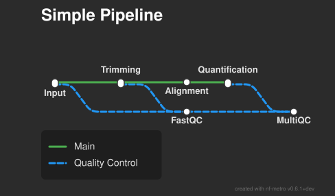
A few things to notice:
%%metro line:defines a route asid | Display Name | #hexcolorwith an optional fourth field for style (solid,dashed, ordotted). Every edge must reference one of these IDs.graph LRstarts the Mermaid graph. nf-metro always uses left-to-right flow at the top level.- Stations use Mermaid node syntax:
node_id[Label]. - Edges carry a line ID:
source -->|line_id| target. An edge can carry multiple lines at once:a -->|line1,line2| b.
Declare each station on its own line
Give every station one labelled line of its own (fastqc[FastQC]) and use bare ids in edges (fastqc -->|qc| multiqc). Because most stations are shared by several edges, this keeps each label in exactly one place, and it gives %%metro directives (file:, marker:, off_track:, ...) a clear node to anchor to. nf-metro also accepts inline-shaped endpoints (fastqc[FastQC] -->|qc| multiqc[MultiQC]) for Mermaid compatibility, but avoid them in committed maps: a station can only carry its inline label on one of its edges, so mixing the two styles fragments where a label lives.
Without sections, all stations sit on a single track. That works for simple pipelines, but real workflows have logical groupings.
2. Grouping stations into sections¶
Sections wrap related stations in visual boxes using Mermaid subgraph blocks. This makes the diagram easier to read and lets the layout engine route lines between groups automatically.
%%metro title: Sectioned Pipeline
%%metro style: dark
%%metro line: main | Main | #4CAF50
%%metro line: qc | Quality Control | #2196F3
graph LR
subgraph preprocessing [Pre-processing]
input[Input]
trim[Trimming]
fastqc[FastQC]
input -->|main,qc| trim
trim -->|main,qc| fastqc
end
subgraph analysis [Analysis]
align[Alignment]
quant[Quantification]
align -->|main| quant
end
subgraph reporting [Reporting]
multiqc[MultiQC]
report[Report]
multiqc -->|qc| report
end
fastqc -->|main| align
fastqc -->|qc| multiqc
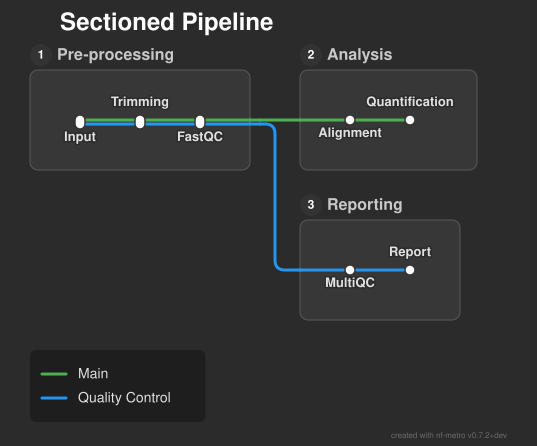
There is one important rule: edges between stations in different sections must go outside all subgraph/end blocks. The three inter-section edges at the bottom of the file connect Pre-processing to Analysis and Reporting.
nf-metro places sections on a grid automatically based on their dependencies. It also creates port connections at section boundaries and junction stations where lines diverge.
3. Fan-out and fan-in¶
When lines diverge from a shared section into separate analysis paths and then reconverge, nf-metro stacks the target sections vertically and routes each line to its destination:
%%metro title: Fan-out Pipeline
%%metro style: dark
%%metro line: wgs | Whole Genome | #e63946
%%metro line: wes | Whole Exome | #0570b0
%%metro line: panel | Targeted Panel | #2db572
graph LR
subgraph preprocessing [Pre-processing]
fastqc[FastQC]
trim[Trimming]
fastqc -->|wgs,wes,panel| trim
end
subgraph wgs_analysis [WGS Analysis]
bwa_wgs[BWA-MEM]
gatk_wgs[GATK HaplotypeCaller]
bwa_wgs -->|wgs| gatk_wgs
end
subgraph wes_analysis [WES Analysis]
bwa_wes[BWA-MEM]
gatk_wes[GATK Mutect2]
bwa_wes -->|wes| gatk_wes
end
subgraph panel_analysis [Panel Analysis]
minimap[Minimap2]
freebayes[FreeBayes]
minimap -->|panel| freebayes
end
subgraph annotation [Annotation]
vep[VEP]
report[Report]
vep -->|wgs,wes,panel| report
end
trim -->|wgs| bwa_wgs
trim -->|wes| bwa_wes
trim -->|panel| minimap
gatk_wgs -->|wgs| vep
gatk_wes -->|wes| vep
freebayes -->|panel| vep
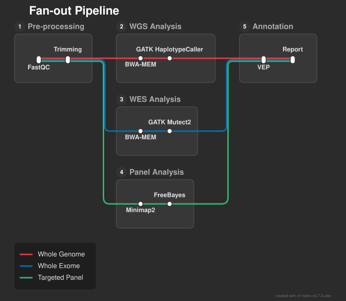
Each line takes a different route through its own analysis section, then all three reconverge at annotation. The layout engine handles junction creation, vertical stacking, and routing automatically. You don't need to specify any positions or port sides.
Same-line convergence (fan-in merge)¶
When optional processing steps mean the same line can reach a destination from multiple sources, nf-metro consolidates the overlapping routes. One bypass carries the full path (the "trunk"), and closer sources drop down to join it:
%%metro title: Fan-In Merge
%%metro style: dark
%%metro line: main | Main | #0570b0
%%metro line: aux | Auxiliary | #2db572
graph LR
subgraph source [Source]
s1[Produce]
s2[Prepare]
s1 -->|main,aux| s2
end
subgraph step_a [Step A]
a1[Process A]
a2[Refine A]
a1 -->|main| a2
end
subgraph step_b [Step B]
b1[Process B]
b2[Refine B]
b1 -->|main| b2
end
subgraph sink [Sink]
t1[Collect]
t2[Report]
t1 -->|main,aux| t2
end
%% Each section sends main to ALL downstream sections
s2 -->|main| a1
s2 -->|main| b1
s2 -->|main| t1
s2 -->|aux| t1
a2 -->|main| b1
a2 -->|main| t1
b2 -->|main| t1
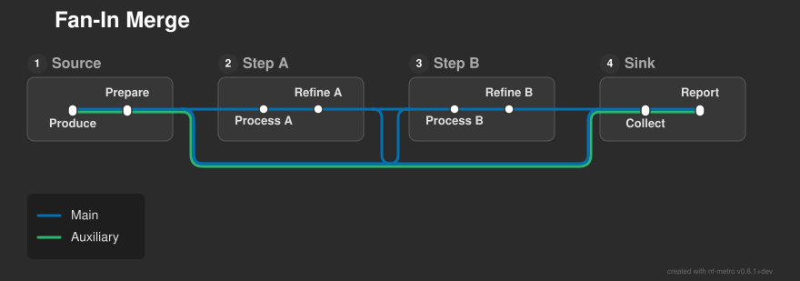
The key pattern: every section sends main not just to the next step, but to all subsequent sections. This creates convergent same-line edges at the sink's entry port. The layout engine detects this and routes a single trunk bypass from the farthest source, with branches dropping down to join it from intermediate sections.
4. Section directions¶
By default every section flows left-to-right (LR). You can change a section's internal flow direction with %%metro direction: to create more compact or visually interesting layouts.
This example adds a top-to-bottom (TB) section that acts as a vertical connector between the fan-out analysis paths and the final reporting section:
%%metro title: Section Directions
%%metro style: dark
%%metro line: rna | RNA-seq | #2db572
%%metro line: dna | DNA-seq | #e63946
%%metro legend: bl
graph LR
subgraph preprocessing [Pre-processing]
fastqc[FastQC]
trim[Trimming]
fastqc -->|rna,dna| trim
end
subgraph rna_analysis [RNA Analysis]
star[STAR]
salmon[Salmon]
star -->|rna| salmon
end
subgraph dna_analysis [DNA Analysis]
bwa[BWA-MEM]
gatk[GATK]
bwa -->|dna| gatk
end
subgraph postprocessing [Post-processing]
%%metro direction: TB
samtools[SAMtools]
picard[Picard]
bedtools[BEDTools]
samtools -->|rna,dna| picard
picard -->|rna,dna| bedtools
end
subgraph reporting [Reporting]
multiqc[MultiQC]
report[Report]
multiqc -->|rna,dna| report
end
trim -->|rna| star
trim -->|dna| bwa
salmon -->|rna| samtools
gatk -->|dna| samtools
bedtools -->|rna,dna| multiqc
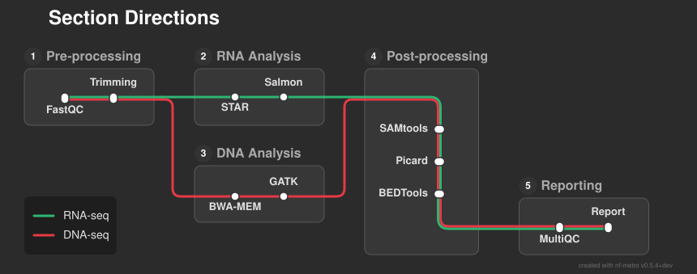
The Post-processing section flows top-to-bottom, collecting the RNA and DNA lines from the sections above and below, then handing them off horizontally to Reporting. The only change from a normal section is the single %%metro direction: TB directive.
The available directions are:
LR(default) -- left to rightTB-- top to bottom, useful for vertical connector sectionsRL-- right to left, used automatically by the layout engine for serpentine folds in long pipelines
5. File input and output icons¶
Real pipeline diagrams benefit from showing where data enters and leaves. The %%metro file: directive marks a station as a file terminus, rendering it as a document icon instead of a regular station marker.
Two things are needed:
-
A
%%metro file:directive at the top of the file, mapping a station ID to a label: -
A blank terminus station (
[ ]) inside a section, whose ID matches the directive:
The blank label tells nf-metro to render the document icon (with the label from the directive) instead of a pill-shaped station. Connect it to the pipeline with normal edges like any other station.
%%metro title: File Icons
%%metro style: dark
%%metro file: reads_in | FASTQ
%%metro file: report_out | HTML
%%metro line: main | Main | #4CAF50
%%metro line: qc | Quality Control | #2196F3
graph LR
subgraph analysis [Analysis]
reads_in[ ]
trim[Trimming]
align[Alignment]
quant[Quantification]
reads_in -->|main,qc| trim
trim -->|main| align
align -->|main| quant
end
subgraph reporting [Reporting]
multiqc[MultiQC]
report_out[ ]
trim -->|qc| multiqc
quant -->|qc| multiqc
multiqc -->|qc| report_out
end
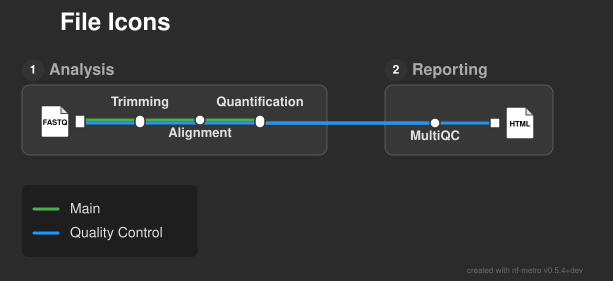
The FASTQ icon at the start of the Analysis section shows the pipeline input. The HTML icon at the end of Reporting shows where the QC report is written. Common labels include FASTQ, BAM, VCF, HTML, and CSV, but you can use any short string.
For a complex real-world example using file icons, see examples/rnaseq_sections.mmd.
Paired/multiple files¶
When a station represents paired input files (e.g. paired-end FASTQ reads), use %%metro files: instead of %%metro file:. This renders a stacked-documents icon to visually distinguish it from a single file:
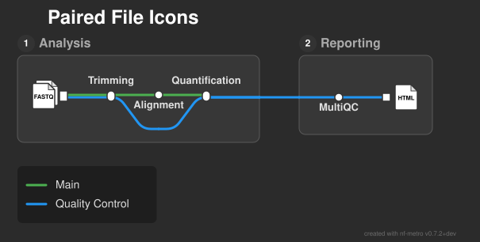
Folder icons¶
For stations that represent a directory of output files rather than a single file, use %%metro dir::
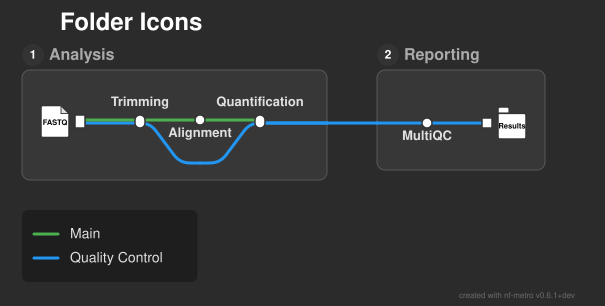
All three directives (file:, files:, dir:) work the same way: pair a station ID with a label, give the station a blank label ([ ]), and connect it with normal edges. The only difference is the rendered icon shape.
Naming an icon¶
The label inside an icon is meant for a short type chip (e.g. CSV, FASTQ). To attach a human-readable name without overlapping the chip, add an optional third field to the directive:
The name is rendered as a caption directly below the icon. If multiple labels are listed (FASTQ, BAM), the same name applies to all of them.
Banner labels¶
To make a format stand out, add banner as a fourth field to a file: or files: directive. The format label then renders as bold white text on a dark strip across the lower part of the icon, transit-map "format chip" style, while the white document stays visible:
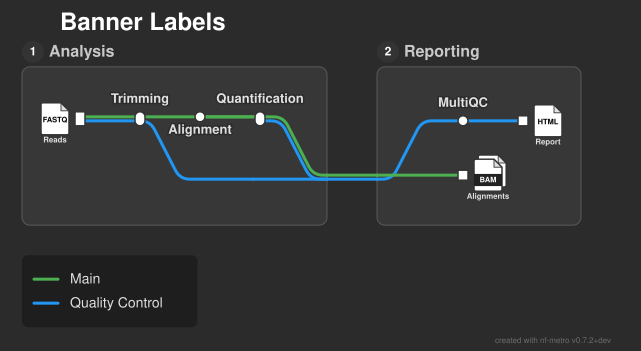
Any name caption (third field) still renders below the icon, so | <name> | banner keeps the caption and | | banner applies the strip with no caption. banner is not supported on dir: (folder) icons.
6. Per-station markers¶
By default every station is drawn as a uniform pill. The %%metro marker: directive overrides one station's marker so it can encode a tool attribute - mandatory vs optional, hardware-accelerated, expanded in another diagram - through its shape and fill:
shapeiscircle(fully rounded),square(sharp corners), orpill(a flat-edged capsule running along the line, handy for flagging a step whose detail is shown in a separate diagram). Every shape still spans the line bundle, so it covers all the lines passing through the station.fillisopen(a hollow marker in the background colour),solid(the default station fill), or any literal colour - a name (red) or hex (#4CAF50).
shape defaults to circle and fill to solid, so %%metro marker: node_id | gives a solid circle. The directive may appear before or after the node is defined.
To explain the markers, add a key below the line legend with %%metro marker_legend:, one row per shape/fill combination:
Here a two-line variant-calling pipeline uses square (mandatory), open-circle (optional), pill (expanded elsewhere) and coloured-square (hardware-accelerated) markers, with a matching key:
%%metro title: Per-station marker styles
%%metro style: dark
%%metro line: germline | Germline calling | #0570b0
%%metro line: somatic | Somatic calling | #e63946
%%metro legend: bl
%%metro marker: bwa | square, solid
%%metro marker: markdup | square, solid
%%metro marker: bqsr | square, #4CAF50
%%metro marker: haplotypecaller | square, #4CAF50
%%metro marker: mutect2 | square, #1f4e79
%%metro marker: cnvkit | pill, open
%%metro marker: vep | circle, open
%%metro marker: snpeff | circle, open
%%metro marker_legend: square, solid | Mandatory
%%metro marker_legend: circle, open | Optional
%%metro marker_legend: pill, open | Expanded elsewhere
%%metro marker_legend: square, #4CAF50 | Parabricks accelerated
%%metro marker_legend: square, #1f4e79 | Sentieon accelerated
graph LR
subgraph alignment [Alignment & preprocessing]
bwa[BWA-MEM]
markdup[MarkDuplicates]
bqsr[BQSR]
bwa -->|germline,somatic| markdup
markdup -->|germline,somatic| bqsr
end
subgraph calling [Variant calling & annotation]
haplotypecaller[HaplotypeCaller]
mutect2[Mutect2]
cnvkit[CNVkit]
snpeff[SnpEff]
vep[VEP]
haplotypecaller -->|germline| snpeff
mutect2 -->|somatic| vep
mutect2 -->|somatic| cnvkit
end
bqsr -->|germline| haplotypecaller
bqsr -->|somatic| mutect2

Stations with no %%metro marker: keep the default pill, so the feature is entirely opt-in.
7. Hidden stations¶
Sometimes you need a branching or merging point in the graph that doesn't represent a real pipeline step. For example, lines might diverge at a point where no tool is actually run. Adding a visible station there clutters the diagram with a meaningless marker.
Any station whose ID starts with _ (underscore) is hidden. It participates in layout and routing (lines pass through it), but no marker or label is rendered.
Here is a pipeline with a visible branch station that serves only as a fork point:
%%metro title: Visible Branch Point
%%metro style: dark
%%metro line: dna | DNA | #e63946
%%metro line: rna | RNA | #0570b0
%%metro line: prot | Protein | #2db572
graph LR
subgraph input [Input]
fetch[Fetch Data]
validate[Validate]
fetch -->|dna,rna,prot| validate
end
subgraph processing [Processing]
branch[Branch]
align[Alignment]
quant[Quantification]
search[Database Search]
branch -->|dna,rna| align
branch -->|prot| search
align -->|rna| quant
end
subgraph reporting [Reporting]
multiqc[MultiQC]
end
validate -->|dna,rna,prot| branch
align -->|dna| multiqc
quant -->|rna| multiqc
search -->|prot| multiqc
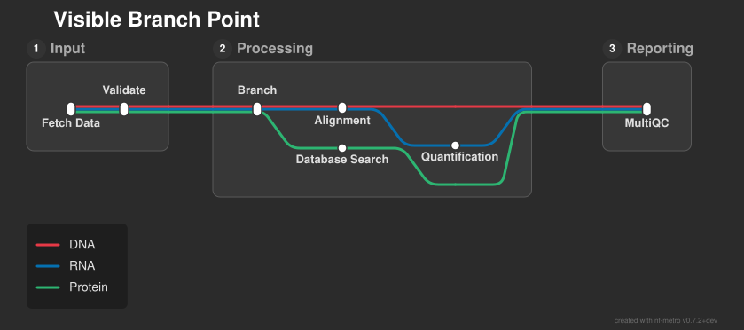
The "Branch" station is real in the graph but meaningless in the pipeline. Renaming it to _branch hides it:
subgraph processing [Processing]
_branch
align[Alignment]
...
_branch -->|dna,rna| align
_branch -->|prot| search
end
validate -->|dna,rna,prot| _branch
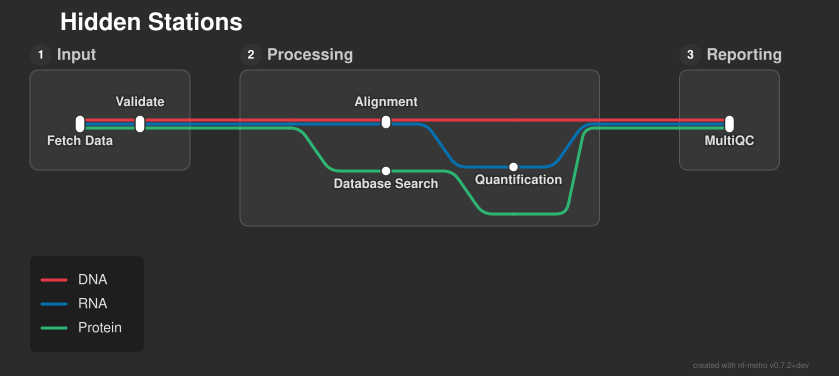
The lines still fork at the same point, but there is no marker or label. This gives you fine control over where splits happen without adding a fake step to the diagram.
Use --debug to see hidden stations as dashed circles: nf-metro render --debug pipeline.mmd -o debug.svg
8. Putting it all together¶
The nf-core/rnaseq example at examples/rnaseq_auto.mmd combines all of these patterns in a real-world pipeline:

Five analysis routes share preprocessing, fan out to different aligners, reconverge at post-processing (a TB section), and fold back through QC (an RL section that creates a serpentine return path). The layout engine infers section directions, grid positions, and port sides automatically from the graph topology.
The nf-core/variantbenchmarking example at examples/variantbenchmarking_auto.mmd shows a different topology pattern - seven lines converging at a benchmarking section, with the layout engine automatically splitting into two rows:
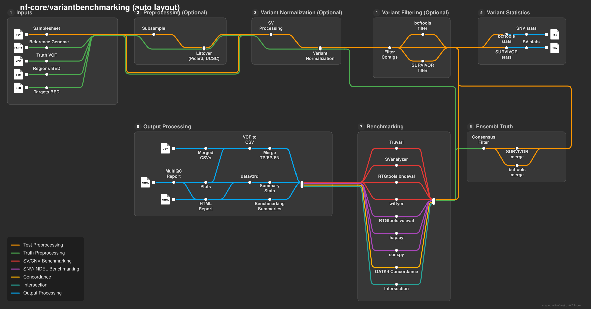
See the Gallery for more rendered examples.
Directive reference¶
Global directives¶
These go at the top of the file, before graph LR.
| Directive | Description |
|---|---|
%%metro title: <text> |
Map title |
%%metro caption: <text> |
Free-text caption or attribution line rendered bottom-left of the map (e.g. Adapted from Author et al., Journal (Year)). |
%%metro logo: <path> |
Logo image, bundled into the legend (or top-left if there is no legend). |
%%metro logo_scale: <factor> |
Scale the logo within the legend block (1.0 = default auto-size). Values above 1 grow the legend box to contain the logo. |
%%metro style: <name> |
Theme: dark (default, the nfcore theme) or light. Selects the render theme unless --theme is passed. |
%%metro line: <id> \| <name> \| <color> [\| <style>] |
Define a metro line. Optional style: solid (default), dashed, or dotted |
%%metro grid: <section> \| <col>,<row>[,<rowspan>[,<colspan>]] |
Pin a section to a grid position |
%%metro legend: <position> |
Position the legend (and its embedded logo). Keyword: tl, tr, bl, br, bottom, right, or none (a bare keyword auto-relocates if it would overlap a section or route). Add \| canvas to anchor the keyword to the canvas margin, or \| <dx>,<dy> to nudge it; both pin the block exactly (warning on overlap rather than relocating). Use <x>,<y> for absolute top-left coordinates. |
%%metro line_order: <strategy> |
Line ordering for track assignment: definition (default, preserves .mmd order) or span (longest-spanning lines get inner tracks) |
%%metro diamond_style: <mode> |
Fork-join (diamond) layout: straight (default) keeps the top branch on the main track; symmetric fans the branches evenly |
%%metro fold_threshold: <columns> |
Max station-columns a section row may reach before the auto-layout wraps it onto the next row (default 15). Raise it to keep a long horizontal trunk of sections on a single row. |
%%metro x_spacing: <pixels> |
Horizontal spacing between layers (default: auto - widened from 60 only when wide labels would collide) |
%%metro y_spacing: <pixels> |
Vertical spacing between tracks (default: auto - derived from the map's content) |
%%metro section_x_gap: <pixels> |
Horizontal gap between sections (default: 50) |
%%metro section_y_gap: <pixels> |
Vertical gap between sections (default: 50) |
%%metro label_angle: <degrees> |
Station-label angle (0 = horizontal). Overrides the theme default |
%%metro font_scale: <factor> |
Scale every text size and the label-width metrics that drive layout spacing (1.0 = default) |
%%metro legend_logo_gap: <pixels> |
Horizontal gap between the logo and the legend entries |
%%metro width: <pixels> |
Output width in pixels (default: auto from content) |
%%metro height: <pixels> |
Output height in pixels (default: auto from content) |
%%metro animate: true |
Add animated balls traveling along the metro lines |
%%metro directional: true |
Draw static chevrons along each route pointing in the flow direction (source to target). Off by default; CLI equivalent --directional. Marker size, spacing, opacity, and colour are theme knobs (directional_marker_*). |
%%metro strict: true |
Treat a layout-invariant violation on the rendered geometry (e.g. a station pushed outside its section box) as an error that aborts the render, instead of a warning. Off by default; CLI equivalent --strict. See When a layout is broken. |
%%metro file: <station> \| <label> [\| <name>] [\| banner] |
Mark a station as a file terminus with a document icon. Optional name renders as a caption below the icon; optional banner draws the label on a dark strip across the icon. |
%%metro files: <station> \| <label> [\| <name>] [\| banner] |
Mark a station with a stacked-documents icon (e.g. paired files). Optional name caption; optional banner strip. |
%%metro dir: <station> \| <label> [\| <name>] |
Mark a station with a folder icon (e.g. output directory). Optional name caption. |
%%metro off_track: <station>[, <station>...] |
Lift the listed stations above the section's main track, anchored to their consumer (inputs) or producer (output artefacts) (see below) |
%%metro compact_offsets: true |
Compact line offsets within stations (see below) |
%%metro center_ports: true |
Centre inter-section ports on the shorter of the two connected sections, so lines enter/exit at the visual midpoint. |
%%metro line_spread: <mode>[ \| <id>...] |
How lines sharing a station relate vertically (see below). <mode> is bundle (default), centered, or rails. The bare form sets the graph default; <mode> \| sectionA, sectionB overrides those sections. |
%%metro interchange: <node> \| <rail-1 lines> \| <rail-2 lines> [\| ...] |
Render a shared step as a cross-track interchange instead of a convergence point (see below). Each pipe-group is one rail (comma-separated lines bundle on it). Auto-layout infers this for fully-parallel lanes, so the directive is only needed to pin a grouping. |
%%metro legend_min_height: <pixels> |
Minimum legend content height in pixels (useful for single-line maps where the logo would otherwise be tiny) |
%%metro process: <station> \| <regex> |
Experimental. Tie a station to the Nextflow process(es) it represents, for live progress (see Live progress). The regex matches the fully-qualified process name; repeat the directive to attach several patterns to one station. Pure metadata - it never affects the rendered map. |
%%metro manifest: <bool> |
Embed the machine-readable data manifest (the <metadata> block and per-node data-node-* attributes) in the SVG. On by default; %%metro manifest: false (or --no-manifest) emits the drawn map only. |
Compact offsets. By default, each line reserves a fixed vertical slot across the whole map based on its declaration order. If you define three lines, every station that carries even one of them is sized to fit all three. This keeps bundles visually consistent but wastes space when most stations only carry one or two lines.
With %%metro compact_offsets: true, stations are only as wide as the lines actually passing through them. A station where one line enters and a different line exits renders as a dot (zero offset) rather than a pill. This works well for maps with few lines but many stations, like the variantbenchmarking example.
Off-track inputs. Pipelines often have reference or auxiliary inputs (a FASTA, a GTF, a known-variants VCF) that feed into a processing step partway through a section rather than flowing along the main route. By default such an input station would claim a line-track slot on the trunk, pushing the layout around. List its station ID in %%metro off_track: and nf-metro lifts it above the section's main track, dropping it down into its consumer:
%%metro file: ref_in | FASTA | Reference
%%metro file: gtf_in | GTF | Annotation
%%metro off_track: ref_in, gtf_in
This pairs naturally with the file: / files: / dir: icon directives - the lifted stations are usually file terminals. The off_track_convergence topology and the differentialabundance example both use it.
Off-track outputs. The same directive works for file artefacts written part-way through a section (a bam/cram dumped after a mapping step, say). A producer-fed sink - a station with an incoming edge from an on-track step and no on-track consumer - is anchored above its producer rather than the section top, so the artefact hangs off the trunk right where it is written:
The off_track_outputs example hangs several such artefacts above a pre-processing trunk.
Line spread. %%metro line_spread: controls how lines that share a station relate to each other vertically. It has three modes:
bundle(the default) merges every line sharing a station onto a single trunk track; a line that detours to its own station dips off the trunk and back. Line base-tracks stack downward from the first line, so the shared trunk sits at the top and detours cascade below it.centeredalso merges lines onto one trunk, but balances that bundle about the midline: the shared trunk sits on the vertical centre and each line's exclusive stations distribute symmetrically above and below it, instead of the top-anchored downward cascade.railskeeps co-travelling lines on separate parallel rails rather than bundling them onto a trunk. Each line gets a fixed, evenly-spaced horizontal rail, and a station several lines pass through renders as the classic metro interchange: a white circle on each rail the station uses, joined by a straight connector segment (the nf-core/sarek "Example analysis pathways" subway idiom). Lines converge only at a genuine single-node fan-in/out - e.g. a file terminus all lines reach - where the rails ease together with 45-degree diagonals. Station labels alternate above and below the rails so dense runs stay readable.
The bare directive sets the graph-wide default:
Append | <section>, ... to override individual sections, so one map can mix modes - a bundle trunk feeding a rails analysis panel, say:
Here every section defaults to centered while pathways is laid out as parallel rails; ordinary section placement positions both. The line_spread example shows all three modes in one map via per-section overrides. For rails, inter-section edges into or out of a rail section are not yet supported - a rail section should be self-contained.
Cross-track interchanges. Sometimes a single step is shared by lines that otherwise run as separate parallel lanes - a tumour and a normal lane both running MarkDuplicates, say - but the lanes never actually merge. In bundle mode each lane has to dip off its track to touch that shared node and dip back, pinching the lines together at a point that isn't really a join. An interchange renders the shared step the way a real metro map would: each lane stays straight on its own track, and the step is drawn as a connector (a knob on each rail joined by a link bar) spanning them.
Unlike line_spread: rails, this is per-node and works in ordinary bundle/centered layout - only the one shared step becomes an interchange; everything else stays as it was. Internally the node is expanded into one ordinary sub-station per rail, so the normal layout engine keeps each lane straight and routes it; only the glyph is special.
Auto-layout infers an interchange automatically wherever the lanes are fully parallel - every line through the node has its own predecessor and its own successor, so converging them buys nothing. You only need the directive to pin a specific rail grouping (e.g. bundling two lines onto one rail), or to force an interchange where lines share a neighbour:
The lanes are listed one rail per pipe-group; commas bundle several lines onto the same rail. Auto-detection deliberately abstains when two lines share a predecessor or successor (e.g. two callers feeding one merge): there the convergence is doing real work, so it is left alone. It also abstains when another lane's rail would fall between the interchange's rails, since the connector bar would then cut across that lane's stations. Interchanges are skipped inside rails sections, which already lay every line on its own rail. The cross_track_interchange example shows a shared MarkDuplicates step across parallel tumour/normal lanes.
Section directives¶
These go inside subgraph blocks.
| Directive | Description |
|---|---|
%%metro entry: <side> \| <lines> |
Entry port hint. Sides: left, right, top, bottom |
%%metro exit: <side> \| <lines> |
Exit port hint. Sides: left, right, top, bottom |
%%metro direction: <dir> |
Internal flow direction: LR, RL, or TB |
Entry/exit hints tell the layout engine which side of the section box lines should enter or leave from. Most of the time you can omit these entirely and let the auto-layout engine figure it out. They are useful when you want lines to exit from different sides of the same section (e.g., right for some lines, bottom for others).
CLI flags and directive precedence¶
Every layout and render option can be set two ways: a %%metro directive in the file, or the matching nf-metro render CLI flag. They share one precedence rule:
CLI flag (when passed) →
%%metrodirective → built-in default.
Set the directive in your committed .mmd so the map reproduces from the file alone, and reach for the flag only to tweak a single render without editing the file. The two planes always use the same name (the flag is the kebab-cased directive); a directive and its flag are defined from one registry, so they cannot drift apart.
| Directive | CLI flag | Default |
|---|---|---|
title: |
--title |
(none) |
style: |
--theme |
nfcore |
logo: |
--logo |
(none) |
x_spacing: |
--x-spacing |
auto |
y_spacing: |
--y-spacing |
auto |
section_x_gap: |
--section-x-gap |
50 |
section_y_gap: |
--section-y-gap |
50 |
fold_threshold: |
--fold-threshold |
auto (15) |
diamond_style: |
--diamond-style |
straight |
line_order: |
--line-order |
definition |
center_ports: |
--center-ports / --no-center-ports |
false |
compact_offsets: |
--compact-offsets / --no-compact-offsets |
false |
line_spread: |
--line-spread |
bundle |
label_angle: |
--label-angle |
theme default (0) |
font_scale: |
--font-scale |
1.0 |
logo_scale: |
--logo-scale |
1.0 |
legend: |
--legend |
auto |
legend_min_height: |
--legend-min-height |
0 |
legend_logo_gap: |
--legend-logo-gap |
auto |
width: |
--width |
auto |
height: |
--height |
auto |
animate: |
--animate / --no-animate |
off |
strict: |
--strict / --no-strict |
off |
--output, --format, --from-nextflow, and --debug have no directive: they select the output target or a diagnostic overlay rather than describing the diagram.
When a layout is broken¶
Some directive combinations leave the layout engine no clean way to place a map - for example, an internally left-to-right section whose only ports are on the top and bottom edges has no flow-aligned edge to anchor its row, so its stations end up outside their own section box. nf-metro renders such a map best-effort and prints a warning to stderr naming the problem, rather than refusing to produce anything:
$ nf-metro render broken.mmd -o broken.svg
... the settled layout violates Tier-A invariants the renderer is about to draw ...
Rendered 12 stations, 11 edges, 1 lines -> broken.svg
Pass --strict (or add %%metro strict: true) to turn that warning into a
hard error with a non-zero exit, so a broken map fails your build instead of
shipping a visibly-wrong diagram:
$ nf-metro render broken.mmd -o broken.svg --strict
Error: the settled layout violates Tier-A invariants ...
--strict has the same meaning for nf-metro validate --with-layout, which
checks a map without rendering it.
Bridge glyphs¶
When two distinct lines cross at a point that is neither a shared station nor a merge/junction, nf-metro automatically draws a bridge glyph: a short gap in the under-route where it passes beneath the over-route. This disambiguates a crossing from an interchange (where a gap would mean the lines genuinely share a node).
Bridge glyphs are computed automatically — there is no directive to enable them. If your diagram has a visual crossing that you do not expect, check whether the two lines genuinely share an endpoint. If they should converge, connect them with a shared station; if the crossing is unavoidable layout-wise, the bridge glyph is the correct rendering.
Tips¶
- Start without sections. Get your stations and line routing right first, then wrap groups in
subgraphblocks. - Omit entry/exit hints. The auto-layout engine infers them correctly in most cases. Only add hints when you need multi-side exits or want to override the default.
- Use
--debugto see the layout internals (see below). - Use
nf-metro validateto catch errors before rendering. - Use
nf-metro infoto inspect the parsed structure (sections, lines, stations, edges).
Debug mode¶
Add --debug to any render command to overlay layout internals on the diagram:

The overlay shows:
| Element | Appearance | What it tells you |
|---|---|---|
| Entry ports | Green diamonds | Where lines enter a section, with port ID and side |
| Exit ports | Red diamonds | Where lines leave a section, with port ID and side |
| Hidden stations | Dashed circles | Branch points created with [hidden] - invisible in normal rendering |
| Edge waypoints | Small filled circles | Intermediate routing points along each edge path |
| Grid lines | Yellow dashed lines | Boundaries between grid columns and rows, labeled with column/row indices |
This is useful for diagnosing routing issues, understanding why lines take a particular path, or verifying that port sides and grid positions are what you expect.